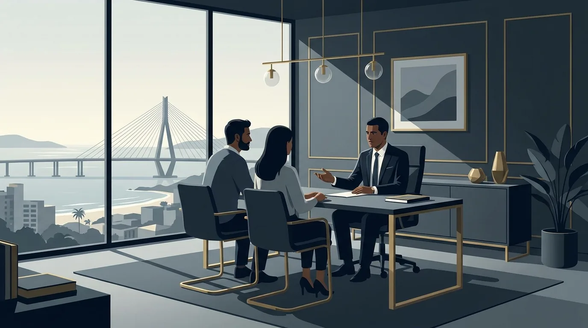
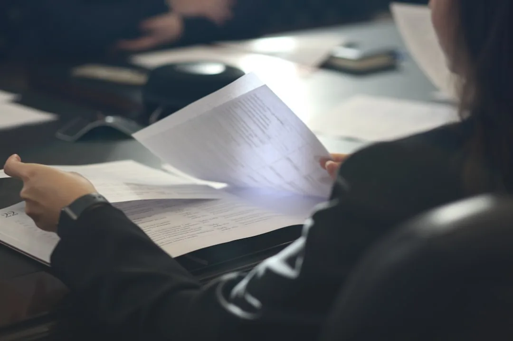

Advogado Civil em Florianópolis: O que Faz e Quando Buscar

Um aluguel de temporada que terminou em prejuízo. Uma batida de carro na SC-401 sem acordo à vista. Ou aquele serviço pago que nunca foi entregue. Situações assim acontecem todos os dias em Florianópolis, e todas elas pertencem ao mesmo campo: o direito civil.
Quando a conversa não resolve, o advogado civil é o profissional que protege seu patrimônio e seus direitos. Ele atua em contratos, indenizações, cobranças e disputas sobre imóveis. Além disso, orienta decisões antes de o problema aparecer, o que costuma sair bem mais barato do que brigar na Justiça depois.
Neste guia, você vai entender o que faz um advogado civil em Florianópolis, quais casos ele resolve e em que ele se diferencia do criminalista e do trabalhista. Também vai conhecer os conflitos mais comuns na capital catarinense, o valor da advocacia preventiva e os sinais de que chegou a hora de buscar ajuda.
O que faz um advogado civil e quais problemas ele resolve
O direito civil é o ramo que regula as relações entre particulares, ou seja, entre pessoas e empresas nas situações comuns da vida. Suas regras estão reunidas principalmente no Código Civil, a lei que trata de contratos, propriedade, obrigações, família e herança.
Na prática, o advogado civil cuida dos conflitos que nascem dessas relações. Ele negocia, redige e revisa documentos, orienta decisões e, quando necessário, conduz processos judiciais do início ao fim. Por isso, seu campo de trabalho é amplo. Veja as principais frentes de atuação.
Contratos: da elaboração à revisão

Todo negócio relevante passa por um contrato. Compra e venda, prestação de serviços, locação, parceria comercial, empréstimo entre conhecidos. O advogado elabora o documento, revisa as cláusulas antes da assinatura e cobra o cumprimento quando uma das partes falha.
Um contrato bem escrito reduz ambiguidades. Ele define prazos, valores, multas e o que acontece se algo der errado. Por outro lado, um contrato mal redigido costuma ser a origem de processos longos e desgastantes.
Responsabilidade civil: o dever de indenizar
Responsabilidade civil é o nome técnico de uma ideia simples: quem causa dano a alguém tem o dever de reparar esse dano. O prejuízo pode ser material, como o conserto de um carro, ou moral, como uma humilhação pública ou uma negativação indevida (ter o nome incluído por engano em cadastros de inadimplentes, como SPC e Serasa).
É essa área que sustenta os pedidos de indenização. Acidentes de trânsito, falhas em serviços, ofensas à honra e danos causados por produtos defeituosos entram aqui. O advogado civil avalia se houve dano, quem deu causa a ele e qual reparação é razoável pedir.
Cobranças, dívidas, vizinhança e propriedade
Quem tem valores a receber também precisa desse profissional. A cobrança judicial de dívidas, a execução (a cobrança feita direto na Justiça quando a dívida já está documentada em cheque, nota promissória ou contrato) e a negociação de acordos fazem parte da rotina cível. O mesmo vale para quem está sendo cobrado de forma indevida e precisa se defender.
Conflitos de vizinhança são outra frente constante: barulho excessivo, obras que avançam sobre o terreno ao lado, discussões sobre muros e limites. Há ainda as questões de posse e propriedade. Posse é usar e ocupar o bem no dia a dia; propriedade é ser o dono registrado em cartório. Nem sempre andam juntas, e é daí que nascem esses conflitos, que envolvem invasões, regularização de imóveis e usucapião, que é a aquisição da propriedade pela posse prolongada e contínua de um bem.
| Área do direito civil | Exemplos de casos |
|---|---|
| Contratos | Compra e venda, prestação de serviços, locação, distrato (encerramento do contrato por acordo) |
| Responsabilidade civil | Acidente de trânsito, dano moral, negativação indevida |
| Cobranças e dívidas | Execução de dívidas, acordos, defesa contra cobrança indevida |
| Vizinhança | Barulho, obras irregulares, limites entre terrenos |
| Posse e propriedade | Usucapião, invasão de imóvel, regularização |
E família e herança?
Divórcio, pensão, inventário e testamento também estão no Código Civil, mas formam ramos próprios: o direito de família e o direito das sucessões. Muitos escritórios atuam nessas frentes em conjunto com a área cível, porém os procedimentos têm particularidades. Assim, esses temas merecem uma conversa específica com o profissional.
Qual a diferença entre causa cível, criminal e trabalhista
Muita gente chega ao escritório sem saber em qual área o seu problema se encaixa. A dúvida é natural. A Constituição Federal garante a todos o acesso à Justiça, mas não explica os caminhos. A divisão fica clara quando observamos quem processa quem e o que se pede em cada tipo de ação.
Na causa cível, em geral, um particular processa outro particular. Pode ser pessoa contra pessoa, pessoa contra empresa ou empresa contra empresa. O objetivo é obter uma indenização, o cumprimento de um contrato ou a solução de um conflito patrimonial. Em regra, ninguém vai preso em ação cível. A única exceção admitida é a dívida de pensão alimentícia.
Na causa criminal, quem aciona a Justiça é o Ministério Público, o órgão do Estado que acusa formalmente quem comete crimes. Discute-se ali se alguém cometeu um crime e qual punição cabe, como multa ou prisão. A vítima participa, mas a ação pertence ao poder público na maioria dos casos.
Na causa trabalhista, a disputa nasce de uma relação de emprego. Em geral, o trabalhador cobra do empregador verbas não pagas, como horas extras, férias ou reparações por uma demissão irregular. O empregador, por sua vez, se defende ou cobra deveres descumpridos.
| Aspecto | Cível | Criminal | Trabalhista |
|---|---|---|---|
| Quem processa | Particular (pessoa ou empresa) | Estado, via Ministério Público | Empregado ou empregador |
| Contra quem | Outro particular | Pessoa acusada de um crime | A outra parte da relação de trabalho |
| O que se pede | Indenização, cumprimento de contrato, solução patrimonial | Punição: multa, restrição de direitos ou prisão | Verbas trabalhistas e reparações |
| Exemplo | Batida de carro com pedido de indenização | Processo por lesão corporal no trânsito | Cobrança de horas extras |
Para causas de menor valor, existe ainda o Juizado Especial Cível, conhecido como tribunal de pequenas causas. Ele julga pedidos mais simples, com rito rápido e menos formalidades. Dependendo do valor e da complexidade, o advogado avalia se o caso cabe no Juizado ou se a Justiça comum é o caminho mais adequado. Essa escolha influencia prazos, custos e as provas que poderão ser produzidas.
Atenção: um mesmo fato pode gerar mais de uma ação. Em uma batida de carro com vítima, o motorista pode responder na esfera criminal pela lesão e, ao mesmo tempo, ser cobrado na esfera cível pela indenização dos danos.
Essa separação importa na hora de escolher o profissional. O advogado civil domina os procedimentos da área cível, enquanto o criminalista e o trabalhista atuam nas esferas deles. Bater na porta certa logo no começo evita perda de tempo e de prazos.
Está em dúvida sobre qual é o seu caso? A equipe da Mussi Advocacia & Consultoria, em Florianópolis, analisa a sua situação e indica o caminho adequado. Fale com um advogado civil e entenda as suas opções antes de tomar qualquer decisão.
Casos comuns de direito civil em Florianópolis
Florianópolis tem características que alimentam certos tipos de conflito. O mercado imobiliário aquecido, o turismo de temporada e a forte presença de prestadores de serviço criam um volume enorme de contratos. Onde há muitos contratos, há muitos desentendimentos. A seguir, os casos que mais levam moradores da capital a procurar um advogado civil.
Acidente de trânsito com pedido de indenização
O trânsito da Grande Florianópolis registra colisões todos os dias, das pequenas batidas em estacionamento aos acidentes graves nas rodovias. Quando o causador não assume o prejuízo, a vítima pode pedir indenização pelos danos materiais, como o conserto e a desvalorização do veículo. Se houver lesão ou abalo relevante, o dano moral também entra no pedido.
Nesses casos, as provas fazem toda a diferença. Boletim de ocorrência, fotos do local, orçamentos e contatos de testemunhas ajudam a demonstrar o que aconteceu. O advogado organiza esse material, tenta o acordo e, se não houver saída, leva o pedido à Justiça.
Aluguel anual e de temporada
A locação movimenta a cidade o ano inteiro. No aluguel anual, os conflitos giram em torno de reajustes, devolução da caução (o depósito de garantia pago no início do aluguel), danos ao imóvel e despejo por falta de pagamento. Na temporada, por sua vez, os problemas típicos são reservas canceladas, imóveis diferentes do anunciado e cobranças que não estavam combinadas.
Tanto o inquilino quanto o proprietário têm direitos e deveres definidos em lei e no contrato. Antes de partir para a briga, muitas vezes uma notificação bem fundamentada resolve. Quando não resolve, a ação judicial é o caminho para reaver valores ou retomar o imóvel.
Compra e venda de imóvel
Comprar um imóvel costuma ser a maior transação da vida de uma pessoa. Atraso na entrega, desfazimento do negócio, problemas de documentação, defeitos de construção e disputas sobre o sinal pago geram processos frequentes na região. A análise prévia do contrato e da matrícula evita boa parte desses problemas. Matrícula é o registro oficial que conta a história do imóvel no cartório.
Serviço pago e não entregue
Reformas abandonadas pela metade e móveis planejados que nunca chegam estão entre as queixas mais frequentes, ao lado do evento contratado que simplesmente não acontece. Quando o prestador recebe e não entrega, o contratante pode exigir o cumprimento, pedir o dinheiro de volta e, conforme o caso, cobrar indenização pelos transtornos. Se você contratou como consumidor final, vale conhecer também os seus direitos básicos de consumidor, que reforçam essa proteção.
Inadimplência: quando você é quem tem a receber
O outro lado do balcão também precisa de amparo. Pense no prestador que trabalhou a temporada inteira e não recebeu, na escola com mensalidades em aberto ou no comércio que aceitou um cheque sem fundos. Nessas horas, a execução de cheques, notas e contratos vencidos recupera valores que pareciam perdidos. Quanto mais cedo a cobrança começa, maiores as chances de receber.
Fique atento: o direito de cobrar não dura para sempre. A lei fixa prazos de prescrição, que é o limite de tempo para levar um pedido à Justiça. Em muitos casos de reparação civil, esse prazo é de três anos. Deixar para depois pode significar perder o direito.
Advocacia preventiva ou contenciosa: prevenir custa menos

A maioria das pessoas só procura ajuda quando o problema já existe. Essa é a advocacia contenciosa: a atuação em conflitos instalados, dentro ou fora do processo judicial. Ela é indispensável, mas chega quando o desgaste já começou.
A advocacia preventiva, também chamada de consultiva, trabalha antes. Nela, o advogado civil revisa o contrato antes da assinatura, aponta cláusulas de risco, sugere garantias e documenta a negociação. Dessa forma, o cliente decide com informação, em vez de descobrir o problema quando ele explode.
A comparação de custos é direta. Uma consulta e uma revisão contratual tomam horas. Um processo judicial consome anos, energia e tem resultado incerto. Portanto, revisar antes de assinar é quase sempre o melhor negócio. Já explicamos em detalhes por que consultar um advogado antes de assinar um contrato muda o rumo de uma negociação.
Isso vale para situações corriqueiras da vida na capital: comprar um imóvel na planta, alugar para a temporada, fechar uma parceria comercial, contratar uma reforma grande. Em todas elas, o olhar técnico antecipa cenários que o entusiasmo do momento esconde. O mesmo raciocínio vale para empresas: quem mantém contratos padronizados e revisados reduz a inadimplência, evita cláusulas frágeis e chega mais forte a qualquer negociação.
Se você está prestes a assinar um contrato relevante em Florianópolis, considere uma análise preventiva. A Mussi Advocacia & Consultoria revisa o documento, explica os riscos em linguagem clara e sugere ajustes antes que a assinatura transforme um detalhe em dor de cabeça.
Como escolher um advogado civil em Florianópolis e quando procurar
Alguns sinais indicam que a conversa informal virou caso jurídico: a outra parte parou de responder, o combinado foi descumprido ou chegou uma notificação, uma citação (o aviso oficial da Justiça de que existe um processo contra você) ou uma cobrança formal. Há ainda a situação em que o prejuízo cresce e ninguém assume a responsabilidade. Diante de qualquer um desses cenários, procurar orientação cedo preserva provas e prazos que se perdem com o passar do tempo.
O que observar na escolha
Confira se o profissional está inscrito na OAB, a Ordem dos Advogados do Brasil, que regulamenta e fiscaliza a profissão. Verifique se ele atua de fato na área cível, pois a experiência específica pesa no resultado do trabalho. Observe ainda a clareza: um bom advogado cível em Florianópolis explica o caso em linguagem simples, apresenta os cenários possíveis e reconhece o que ainda depende de análise.
Além disso, desconfie de quem garante vitória. Nenhum profissional sério promete resultado, porque a decisão final pertence ao juiz e cada processo tem variáveis próprias. O que um advogado pode assumir de verdade é a dedicação técnica e a transparência durante todo o andamento do caso.
Importante: trate promessa de resultado certo como sinal de alerta. O que um advogado sério oferece é análise realista do caso, estratégia fundamentada e acompanhamento próximo em cada fase.
Documentos e primeiros passos
Para a primeira conversa, reúna o que você tiver: contratos, comprovantes de pagamento, conversas de WhatsApp e e-mails, fotos, boletim de ocorrência, notificações recebidas. Se faltar alguma coisa, a consulta acontece mesmo assim; o material que você já tem em mãos ajuda o profissional a enxergar o caso com mais precisão desde o início.
A partir daí, o caminho costuma seguir etapas. Primeiro, a análise do caso e a tentativa de solução extrajudicial, por notificação ou negociação direta. Se o acordo não sair, vem o processo, com manifestação das partes, produção de provas e decisão. Recursos podem alongar o percurso. Um bom advogado informa prazos realistas e mantém você a par de cada andamento.
Ao longo deste guia, você viu o que o direito civil abrange, dos contratos às indenizações e às disputas de posse e propriedade. Viu também como identificar a esfera certa para o seu problema e por que a prevenção, com a revisão do documento antes da assinatura, costuma poupar anos de briga judicial. Cada conflito tem os seus detalhes, e a orientação certa na hora certa protege patrimônio, tempo e tranquilidade. Se você precisa de um advogado civil em Florianópolis para analisar um contrato, uma cobrança ou um pedido de indenização, converse com a Mussi Advocacia & Consultoria e dê o primeiro passo com segurança.
Perguntas frequentes sobre advogado civil
O que faz um advogado civil?
Ele atua nas relações entre particulares: contratos, indenizações, cobranças, conflitos de vizinhança e disputas sobre posse e propriedade. Além do processo judicial, orienta decisões e revisa documentos de forma preventiva, antes que o problema apareça.
Qual a diferença entre advogado civil e advogado criminal?
O advogado civil cuida de disputas patrimoniais entre pessoas e empresas, como indenizações e contratos. O criminalista atua quando o Estado acusa alguém de um crime e o que está em jogo é uma punição, como multa ou prisão.
Advogado civil e advogado cível são a mesma coisa?
Sim, os dois termos indicam o mesmo profissional. "Cível" é a forma mais usada no dia a dia forense para as ações dessa área, enquanto "civil" remete ao ramo do direito. Na prática, você pode usar qualquer um dos dois.
Quando devo procurar um advogado civil em Florianópolis?
Procure ao receber uma citação ou notificação, quando um acordo for descumprido, quando sofrer um prejuízo sem reparação ou antes de assinar um contrato importante. Quanto mais cedo vier a orientação, maiores as chances de uma solução rápida e menos custosa.
Preciso de muitos documentos para a primeira consulta?
Não. Leve o que tiver: contrato, comprovantes, conversas, fotos e notificações. A falta de algum documento não impede a análise inicial. O advogado indica o que ainda precisa ser reunido para fortalecer o caso.
Quanto tempo demora um processo cível?
Não existe prazo único. A duração depende da complexidade do caso, da necessidade de provas, do volume de trabalho do tribunal e de eventuais recursos. Muitos conflitos, porém, terminam antes, em acordo extrajudicial ou em audiência de conciliação.